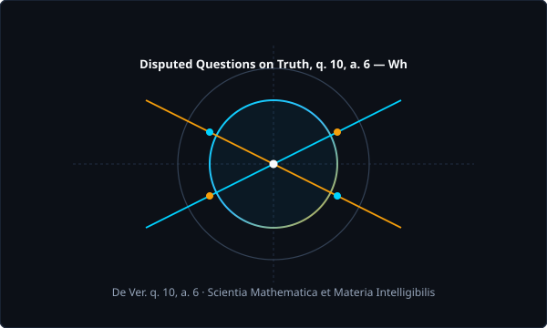

Disputed Questions on Truth, q. 10, a. 6 — Whether the Human Mind Receives Knowledge from Sensible Things and on First Indemonstrable Principles¶
Quaestiones Disputatae de Veritate, q. 10, a. 6 — Utrum mens humana cognitionem a sensibilibus accipiat et de origine primorum principiorum

[q. 10 a. 6 arg. 1] For between things that do not share in matter there can be neither action nor passion, as is clear through Boethius in the book On the Two Natures and through the Philosopher in the book On Generation and Corruption. Now our mind does not share in matter with sensible things. Therefore sensible things cannot act upon our mind so that any knowledge from them should be impressed upon our mind.
[q. 10 a. 6 arg. 2] Furthermore, the object of the intellect is what a thing is, as is said in Book III of On the Soul. Now the quiddity of a thing is perceived by no sense. Therefore the knowledge of the mind is not received from sense.
[q. 10 a. 6 arg. 3] Furthermore, Augustine says in Book X of the Confessions, speaking of the knowledge of intelligible things and how it is acquired by us: There, he says, they were—namely the intelligible objects in our mind—even before I had learned them, though they were not in memory. Therefore it seems that intelligible species are not in the mind as received from the senses.
[q. 10 a. 6 arg. 4] Furthermore, as Augustine proves in Book X of On the Trinity, the soul cannot love anything except things known. Yet before someone learns a given science, he loves it, as is clear from the fact that he seeks it with great study. Therefore, before he learns that science, he possesses it in his knowledge; consequently it seems that the mind does not receive knowledge from sensible things.
[q. 10 a. 6 arg. 5] Furthermore, Augustine says in Book XII of On Genesis According to the Letter: It is not the body that makes the image of the body in the spirit, but the spirit itself makes it within itself with a wonderful swiftness that is ineffably far removed from the slowness of the body. Therefore it seems that the mind does not receive intelligible species from the senses, but itself forms them within itself.
[q. 10 a. 6 arg. 6] Furthermore, Augustine says in Book XII of On the Trinity that our mind judges concerning bodily things according to incorporeal and eternal standards. Now standards received from sense are not of this sort; therefore it seems that the human mind does not receive knowledge from sensible things.
[q. 10 a. 6 arg. 7] Furthermore, if the mind receives knowledge from sensible things, this can only be insofar as a species received from sensible things moves the possible intellect. Yet such a species cannot move the possible intellect. For it does not move it while still existing in the imagination, since while existing there it is not yet intelligible in act, but only in potency, whereas the intellect is moved only by what is intelligible in act, just as sight is moved only by what is visible in act; likewise neither does it move the possible intellect as existing in the agent intellect, which is receptive of no species—otherwise it would not differ from the possible intellect; likewise neither as existing in the possible intellect itself, because a form already inhering in a subject does not move the subject, but in a way rests within it; nor again as existing of itself, since intelligible species are not substances, but belong to the genus of accidents, as Avicenna says in his Metaphysics. Therefore in no way can it come to pass that our mind receives science from sensible things.
[q. 10 a. 6 arg. 8] Furthermore, the agent is nobler than the patient, as is clear through Augustine in Book XII of On Genesis According to the Letter and through the Philosopher in Book III of On the Soul. Now the receiver stands to that from which it receives as patient to agent. Since, therefore, the mind is far nobler than sensible things and the senses themselves, it will not be able to receive knowledge from them.
[q. 10 a. 6 arg. 9] Furthermore, the Philosopher says in Book VII of the Physics that in coming to rest the soul becomes knowing and prudent. Yet the soul could not receive science from sensible things unless it were in some way moved by them. Therefore the soul does not receive science from sensible things.
[q. 10 a. 6 s. c. 1] On the contrary, as the Philosopher says and as is proved by experience, where one sense is lacking, one science is lacking, just as the blind lack the science of colors. Yet this would not happen if the soul received science from another source than through the senses. Therefore it receives knowledge from sensible things through the senses.
[q. 10 a. 6 s. c. 2] Furthermore, all our knowledge originally consists in the knowledge of first indemonstrable principles. Now the knowledge of these arises in us from sense, as is clear at the end of the Posterior Analytics. Therefore our science arises from sense.
[q. 10 a. 6 s. c. 3] Furthermore, nature does nothing in vain, nor does it fail in necessary things. Now the senses would have been given to the soul in vain unless through them it received knowledge concerning things. Therefore our mind receives knowledge from sensible things.
[q. 10 a. 6 co.] I answer that concerning this question the opinion of the ancients was manifold. For some posited that the origin of our science is wholly from an exterior cause separate from matter; and this view is divided into two schools. For some, such as the Platonists, posited that the forms of sensible things exist separate from matter and are thus intelligible in act, and that through participation in them by sensible matter individuals in nature are produced, while through participation in them human minds possess science; and thus they posited the aforesaid forms to be the principle both of generation and of science, as the Philosopher recounts in Book I of the Metaphysics. Yet this position was sufficiently refuted by the Philosopher, who showed that the forms of sensible things must not be posited save in sensible matter, inasmuch as natural forms cannot even be understood in universal without sensible matter, any more than the snub can be understood without a nose. And therefore others, not positing separate forms of sensible things, but intelligences alone—which we call angels—posited the origin of our science to come wholly from separate substances of this sort. Hence Avicenna maintained that just as sensible forms are not acquired in sensible matter save from the influence of the active intelligence, so neither are intelligible forms impressed upon human minds save from the active intelligence, which is not a part of the soul, but a separate substance, as he posits; nevertheless the soul needs the senses as exciting and disposing it toward science, just as lower agents prepare matter to receive a form from the active intelligence. Yet this opinion also does not seem reasonable: because according to it there would be no necessary dependence between the knowledge of the human mind and the sensitive powers, whereas the contrary manifestly appears—both from the fact that when a sense is lacking, science of its proper sensibles is lacking, and also from the fact that our mind cannot consider in act even the things it habitually knows except by forming certain phantasms, whence even when the organ of imagination is injured, consideration is hindered. Moreover, the aforesaid position destroys the proximate principles of things if all lower beings immediately obtain both intelligible and sensible forms from a separate substance. Another opinion belonged to those who posited the origin of our science to come wholly from an interior cause; and this view is likewise divided into two schools. For some posited that human souls contain within themselves the knowledge of all things, yet through union with the body this aforesaid knowledge is darkened; and therefore they said that we need the senses and study in order that the hindrances to science might be removed, declaring that learning is nothing else than remembering—just as it also manifestly appears that from the things we hear or see we remember things we knew previously. Yet neither does this position seem reasonable. For if the union of the soul with the body is natural, it cannot be that natural knowledge should be wholly hindered by it; and thus, if this opinion were true, we would not suffer complete ignorance of those things of which we lack the sense. This opinion would, however, harmonize with that position which holds that souls were created before bodies and afterward united to bodies, for then the composition of body and soul would not be natural, but would accrue accidentally to the soul itself—an opinion judged worthy of rejection according to both faith and the teachings of the philosophers. Others, again, said that the soul is to itself the cause of science: for it does not receive science from sensible things as though likenesses of things reached the soul in any way through the action of sensible objects; rather, at the presence of sensible objects the soul itself forms likenesses of sensible things within itself. Yet neither does this position seem wholly reasonable. For no agent acts except insofar as it is in act; hence if the soul forms the likenesses of all things within itself, it must already possess those likenesses of things in act within itself, and thus this view reverts to the preceding opinion, which holds the science of all things to be naturally implanted in the human soul. And therefore, above all the aforesaid positions, more reasonable is the judgment of the Philosopher, who posits that the science of our mind is partly from within and partly from without—not only from things separate from matter, but also from sensible things themselves. For when our mind is compared to sensible things that exist outside the soul, it is found to stand toward them in a twofold relation. In one way, as act to potency: insofar, namely, as the things that exist outside the soul are intelligible in potency, whereas the mind itself is intelligible in act; and in accordance with this there is posited in the soul an agent intellect, which makes things intelligible in potency to be intelligible in act. In another way, as potency to act: insofar, namely, as in our mind the determinate forms of things exist in potency alone, whereas in things outside the soul they exist in act; and in accordance with this there is posited in our soul a possible intellect, to which it belongs to receive the forms abstracted from sensible things and made intelligible in act through the light of the agent intellect. Now this light of the agent intellect in the soul proceeds, as from its first origin, from separate substances and chiefly from God. And according to this, it is true that our mind receives science from sensible things; nevertheless the soul itself forms the likenesses of things within itself, insofar as through the light of the agent intellect the forms abstracted from sensible things are rendered intelligible in act so that they may be received in the possible intellect. And thus also, in the light of the agent intellect, all science is in a certain way originally implanted in us, through the mediation of the universal conceptions that are immediately known by the light of the agent intellect, through which, as through universal principles, we judge concerning other things and foreknow them within those very principles—so that in this respect even that opinion holds truth which posits that we previously possessed in knowledge the things that we learn.
[q. 10 a. 6 ad 1] To the first objection, therefore, it must be said that sensible forms, or forms abstracted from sensible things, cannot act upon our mind except insofar as they are rendered immaterial through the light of the agent intellect, and are thus made in a certain way homogeneous with the possible intellect upon which they act.
[q. 10 a. 6 ad 2] To the second it must be said that a higher and a lower power operate concerning the same thing not in the same manner, but the higher more sublimely; hence even through the form received from things, sense does not know the thing as efficaciously as the intellect does: rather, sense is led by the hand through it to the knowledge of exterior accidents, whereas the intellect penetrates to the bare quiddity of the thing, separating it from all material dispositions. Hence the knowledge of the mind is said to take its origin from sense not because sense apprehends everything that the mind knows, but because from the things that sense apprehends the mind is led by the hand to further truths, just as sensible things when understood also lead by the hand to the intelligible truths of divine things.
[q. 10 a. 6 ad 3] To the third it must be said that the statement of Augustine is to be referred to the foreknowledge whereby particulars are foreknown in universal principles; for in this sense it is true that the things we learn were previously in our soul.
[q. 10 a. 6 ad 4] To the fourth it must be said that before someone acquires a given science he can love it insofar as he knows it by a certain universal knowledge, knowing the utility of that science, either by sight or in any other way whatever.
[q. 10 a. 6 ad 5] To the fifth it must be said that the soul is to be understood as forming itself in this sense: that through the action of the agent intellect the forms rendered intelligible form the possible intellect, as has been said, and also insofar as the imaginative power can form shapes of diverse sensible things, which appears chiefly when we imagine things that we have never perceived by sense.
[q. 10 a. 6 ad 6] To the sixth it must be said that the first principles whose knowledge is innate to us are certain likenesses of uncreated truth; hence insofar as we judge concerning other things through them, we are said to judge of things through unchangeable standards, or through uncreated truth. Nevertheless, what Augustine says there is to be referred to higher reason, which cleaves to contemplating eternal things—and although it is prior in dignity, its operation is nonetheless posterior in time, because the invisible things are clearly seen, being understood through the things that are made, Romans I, 20.
[q. 10 a. 6 ad 7] To the seventh it must be said that in the reception whereby the possible intellect receives the species of things from the phantasms, the phantasms stand as an instrumental or secondary agent, whereas the agent intellect stands as the principal and primary agent. And therefore the effect of the action is left in the possible intellect according to the condition of both, and not according to the condition of one of them alone; and therefore the possible intellect receives forms as intelligible in act by the power of the agent intellect, yet as likenesses of determinate things from the cognition of the phantasms. And thus forms intelligible in act do not exist of themselves, nor in the imagination, nor in the agent intellect, but solely in the possible intellect.
[q. 10 a. 6 ad 8] To the eighth it must be said that although the possible intellect is unconditionally nobler than the phantasm, nevertheless nothing prevents the phantasm from being nobler in a certain respect—namely insofar as the phantasm is in act the likeness of such a thing, which belongs to the possible intellect only in potency. And thus in a certain way it can act upon the possible intellect by virtue of the light of the agent intellect, just as color can also act upon sight by virtue of bodily light.
[q. 10 a. 6 ad 9] To the ninth it must be said that the rest in which science is brought to perfection excludes the motion of material passions, yet not motion and passion taken in a general sense, according as any receiving whatever is called being acted upon and being moved; for it is in this sense that the Philosopher says in Book III of On the Soul that understanding is a certain being acted upon.